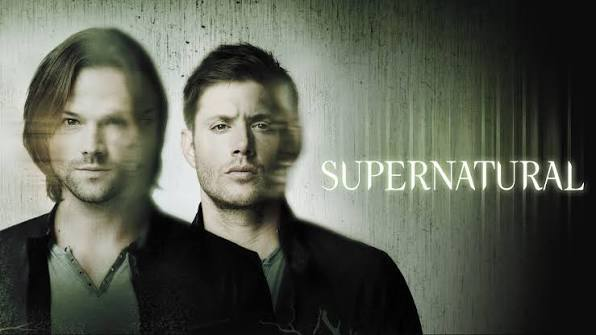

Supernatural

Supernatural is an American television series created by Eric Kripke. The series follows two brothers, Sam and Dean Winchester, who travel across the United States investigating and fighting supernatural creatures.
The story begins with the brothers searching for their missing father, John Winchester. During their journey, they encounter ghosts, demons, vampires, werewolves and many other supernatural beings.
Sam and Dean travel in a black 1967 Chevrolet Impala, which becomes one of the most recognizable symbols of the series. They use their father's journal to investigate supernatural events and learn how to defeat different creatures.
The series premiered in 2005 and ran for 15 seasons. Over time, its story expanded from individual supernatural cases to larger conflicts involving demons, angels and other powerful supernatural forces.